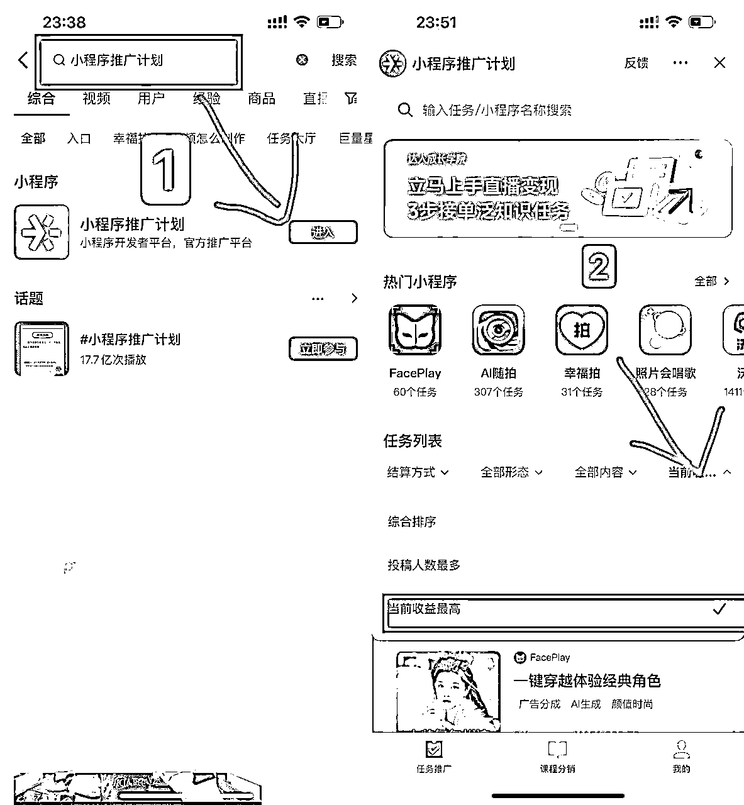

来源：https://f9ii5g947k.feishu.cn/docx/KVBedKyOnot7X8x5IQocbxEVn4d
大家好，我是温酒，上次发帖子还是在上次，
陪跑小程序推广计划两个月，来给大家送把铲子。
【昵称】温酒。
【所在地区】广东茂名
【标签】
私域流量，项目闭环，搞钱
【自我介绍】
94年自由职业者，喜欢围观新事物，寻找出金点，
⭐21年-22年上半年带朋友一起跑小程序推广计划，团队收益70万，个人变现20万（被动收益4万）
⭐22年下半年，小说推文项目闭环，团队百万GMV，个人变现30万(被动收益25万)
目前正在陪跑小程序推广计划。
【提供资源】
AI绘画变现思路，姓氏头像定制，迪士尼头像定制
小程序变现思路，通过平台自带团队分佣体系搭建团队，轻运营实现被动管道收益
小程序算是比较老的一个项目了，从2019年一直到现在依然坚挺，可以说是为数不多的持久型项目之一，
我的互联网创业之路也跟这个项目环环相扣，从一开始的小白对知识付费一毛不拔，通过群主豪哥的分享，慢慢找到自己的方向，赚到一些收益，学会知识付费，打开新世界的大门，后面加入各种付费社群，提高认知，给自己的人生作加速度。
小程序推广项目从2020年的野蛮生长，神仙打架（单日收益低于3万进不了排行榜前十），
到后面的平稳期，内卷期，（各种工作室矩阵，卡道具搬运）同质化，平台打压，
各个阶段我都见证了，直到后面视频相关度不高掉链接，收益下滑，各种大神纷纷退场。
事情的转机，去年下半年推文项目打得火热，小程序最大的培训机构第一馆，10月份调整了战略方向，
把主力放到了推文项目来，第一馆是小程序项目的风向标，它的动态可以影响整个行业的方向，
由于主力军都跑到推文项目搞钱去了，小程序项目市场不就空白出来了吗。
这里有个很有意思的体会，小白都是无头骑士，头部机构主导哪个方向，他们就往哪个方向跑。
我通过抖音搜索关键词，搜集数据，发现小程序项目又回到平稳期了，近期爆款很少有掉链接的，
同时发现一个新的团队，之前跑全民任务的宝妈团队，切过来了，她们通过真人出镜直播搞人是真的猛，
加过去付费链接一下，获取了一手数据反馈，通过抖音爆款视频对应上了他们的收益截图，简单的混剪视频，单个视频能跑到1.5万收益，这个项目能搞，来个回马枪！
于是我就在朋友圈摇人了，
前面半个月想用AI绘画切入小程序头像取图类目里面来，很遗憾，大部分小伙伴不熟悉Ai绘画，没法稳定出图，起号周期长，计划搁浅了，后面经过朋友的点拨,利用简单的图文心理测试让群里的朋友快速拿到正反馈，再延伸到长线品拿到更大的正反馈，从而拉起了200人团队，稳定发育ing，下面是我和朋友的团队收益榜首。
创作者（我们）创作跟小程序相关的内容，再将小程序链接挂载在我们的视频上去推广小程序，只要要用户通过点击你的作品挂载的小程序链接搜索你并观看了广告，你就能获得对应的广告费收益分成（90%）
广告单价正常是在0.1-0.3之间，每个平台和广告商都会不一样，抖音单价偏高300左右，微信单价稍低200左右，快手年轻粉丝占比高单价80-120，（小程序CPS，千次展现300块）平台日结，满20可以提现。
选择项目的时候，我们对项目要有足够的了解，别因为人家一张图， 你就跑去断腿。
小程序推广可以挂星图平台，也可以挂第三方官方平台，因为挂星图有粉丝要求，对作品质量要求高，我们一般跑第三方官方平台，星图我们可以用来收集我们需要的数据。
第一步抖音搜索：小程序推广计划，点击进入官方后台
第二步：点综合排序，选收益最高

第三步：通过收益找对标视频
第四步：了解一下爆单视频长什么样，自己有没有可能模仿出来，先抄后超。
通过官方平台的数据去寻找自己能做的品，同时补上项目的认知。
原来还可以这样变现...
这样也能变现....
我有什么思路是可以切进来的...
有什么玩法是自己可以长期输出的....
我目前的资源适不适合切入这个项目...
我们要做哪个品，先到抖音搜索关键词，找到对标账号，比如生日花语，点话题，选播放最高的点进去，就能找到很多的对标账号了，先分析同行是怎么玩的，如果自己来跑的话，能做出什么优化，素材以及剪辑手法能不能解决，在项目开始前都做好选品评估，减少试错成本，
所以，理论上来说，只有同行的视频爆了，我们都能找到他，因为他的视频不可能不加相关小程序的标签，
对标低粉爆款的新号——可以挖掘新的展现形式，
对标稳定更新的老号——参考选品，同行是最好的老师，
但凡是刷到主页留微信的同行，尽管加上去，围观朋友圈，收集数据，
我第一个10万就是通过同行朋友圈的一张星图收益截图赚到的，抖音搜索他没打码的关键词，找到了对标账号，一看这么简单的头像视频都能赚到3万块，
爱了爱了，第二天搞了个号测试，刚好碰上国庆节热点，3个视频破千万播放，小程序变现8000，定制头像变现3万，开始了新品之路，这个品后面累计变现15万，积累一万头像定制私域。
同行也要分清楚，朋友圈看起来像微商的，一直发收益图，收款图的，套下话术，差不多就删了，大多数偷图怪，收益都不是他们自己的。
个人玩家可以多链接，沟通，特别是账号数据好的，能够确保数据真实的话，发个红包链接一下，说不定以后还能合作，这是我们以后的数据库，市场环境不好的时候，同行爆单也能激励我们走下去，
当你有了团队后，个人玩家的爆款玩法直接付费买过来共享，可以减少试错成本，少走很多弯路。
点下方链接看教程
点下方链接看教程
点下方链接看教程
小程序是一个相对门槛比较低的一个项目，可以先从简单的图文心理玩法，拿到正反馈，
入门后，有意识得去积累自己的信息差，优化出属于自己长期的玩法，
同时，因为这个项目的门槛低，又自带5%的下级收益，很适合用来搭建团队，自己跑通流程后，
可以尝试去教别人玩，慢慢组建起自己的小团队，搭建管道收益，拉长自己的项目周期。
有了一定的经验积累，可以尝试卖铲子赚钱，毕竟教别人赚钱才是最赚钱的生意！
有了稳定的项目，接下来考虑的是流量问题，私域运营问题，这个时候社群里面的各种高手分享的引流思路，朋友圈运营技巧都是我们慢慢吸收的养分，一步一步升级打怪，打造自己的项目闭环。
去年下半年组建了推文团队，除了金钱上的收获外，让我对项目的周期有了新的理解，同样的项目，同一时期入场的朋友有很多，拿到结果的也不少，但是活到最后的都是是带团队的，项目低谷期也能靠管道收益活下去，至于那些开局收益很好，却没有拉团队的朋友，已经测试在其他的项目了，之前积累的信息差再无用武之地。
一个是精力差，个人玩家提高收益的方式只有一种，加号，但是精力有限，收益也有限！
一个是信息差，带团队的人是天然的信息纽带，每天大量学员的数据反馈，足以形成信息差碾压，试错成本大大减低，掌握信息差，还可以利用信息差交换更多的信息资源，积累更多的人脉。即使后面项目跑不下去了，还可以带着人继续跑下一个项目。
想赚钱先聚集人，与你同行的人越来越多，你测试项目的频率就会越来越高，你的边际成本就会越来越低，收集足够多的正反馈，再反哺给小伙伴们，一起搞钱快乐！